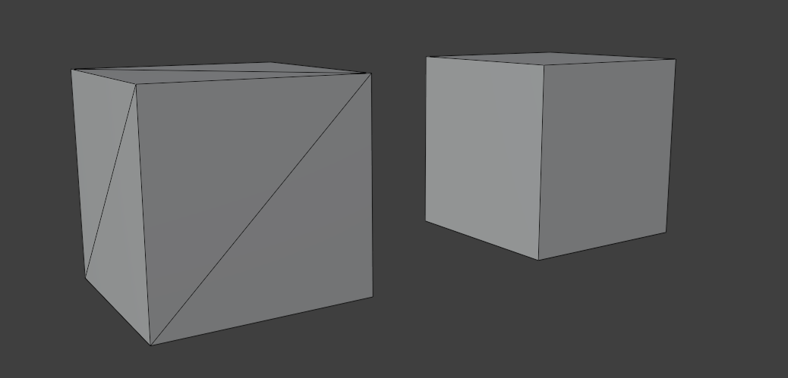
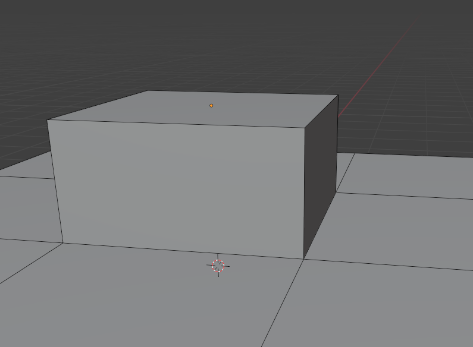

Antes de falar sobre o que é topologia em si, devemos entender o básico do básico. Que são vertices, edges (traduzindo ficaria aresta), e faces. Só para recapitular, vai que você esqueceu de alguma coisa.
Imagine vertices como 4 pontos - 2 em cima em 2 em baixo.
Nós podemos conectar esses vertices de uma forma que pareça com um quadrado. Percebeu que agora ficou essa linha preta? Isso nós chamamos de aresta, edge.
Por fim, nós podemos pintar esse quadrado por dentro de vermelho. Esse vermelho é a nossa face, que é opcional na topologia. Obrigatoriamente, uma face deve ter pelo menos 3 vertices para se tornar uma face. As faces podem ser triângulos, quadrados e N-Gons. N-Gons são as faces que possuem mais de 4 vértices.
O conjunto de vertices, edges e faces são chamados de malha, ou mesh.
E esse quadrado… Não é um quadrado de verdade na computação, é ilusório. Tudo que é face, quadrado, círculos sempre serão compostos por triângulos. Não se preocupe, só saiba que todas as faces sempre serão triângulos. Isso é um assunto mais complexo que você não precisa entender, exceto se for programar em OpenGL ou DirectX.
Aliás, vertices e arestas podem conter propriedades que nos ajudarão a formar nossos modelos. Isso explicarei mais um pouco mais pra frente.
Topologia basicamente é como os vertices, arestas e faces são organizadas.
Pegue como base esse cubo, ele tem 4 faces e 8 vertices. Isso já é topologia! Mas se é uma topologia boa ou ruim a gente tem que descobrir. Vamos por exemplo, pegar outro cubo, esse cubo é idêntico ao outro, certo? No visual sim, mas se a gente pegar o wireframe vamos ver que ele está triangulado. Isso nós chamamos de topologia, como o modelo é feito, como a malha é estruturada.
É bem mais complexo que isso, vou explicar por partes, pois há algumas subcategorias que compõem a topologia.
Como organização de edges loops, subdivisão, poles, redução de edge loop e crease.
Esses são alguns que eu acho que são os mais importantes para compor uma mesh bem feita.
Vamos começar com a organização de edge loops.
Lembrando que edge loops são as voltas que as edge dão em torno de uma malha, e loop cut a ferramenta que faz esses loops.
Está vendo esses dois cubos? Aparentemente os dois são idênticos, até ativarmos o wireframe. Um é composto por triângulos e o outro por quadrados. Os dois estão corretos, pois tudo que está relacionado à faces, no final, sempre será triângulo.
Mas, ei! Se tentarmos dar loop cut no cubo quadriculado, nós vamos conseguir fazer normalmente. Já no triangulado, não vamos conseguir realizá-lo. Pois o Blender não sabe pra onde ir, não sabe onde começa e onde termina o triângulo, não sabe se é pro lado ou se é pra baixo. No cubo quadriculado, funciona perfeitamente o loop cut, pois o Blender sabe onde começa e onde termina. Ou seja: triângulos e N-Gons não podem ser cortados com loop cut pois o Blender não sabe qual a direção o edge loop deve ir.
Se você dominar a organização de loops você vai poder criar a maior parte do que deseja. Lembrando que isso é o básico - você pode criar coisas da hora somente modelando com edge loops, mas uma hora vai você vai ter que usar outros tipos de técnicas pra refinar a malhar, como dando um insect.
Isso é a maior parte da topologia. A maioria dos modelos são feitos praticamente de quads, um pouco de tris e nada de N-Gons. Às vezes nós utilizamos triângulos, mas é algo bem raro. Exceto se você for fazer jogos ou fazer algum estilo artístico, nesses casos é sim aceitável - pois o computador calcula muito mais rápido os triângulos, não envolve matemática. Mas fuja dos N-Gons, eles são uma abominação do 3D - porque pra fazê-lo precisa de vários triângulos que apontando diretamente para o centro, deixando-o não otimizado. Vou dar um exemplo mais tarde no vídeo.
Agora, saindo um pouco de organização de edge loops… Vamos falar sobre poles.
Poles são uma série de loops que terminam em um único vértice. Há uma divisão nessa subcategoria, E-pole e N-pole.
![[Pasted image 20240811225630.png]]
Antes de explicar o que são E-pole e N-poles, faça uma malha de grid 3x3 e faça um extrude no centro. Você vai perceber que esse vértice possui 5 vertices conectados, esse é o E-pole, o extrude-pole - que é usado, obviamente, como ponte para extrude.
Já o N-pole, de nose-pole, possui 3 vertices sendo conectados a ele.
Não há muito o que falar sobre poles. É algo bem específico que você deve tomar cuidado quando for usar. Pois os criando no lado errado pode ser difícil criar loops depois.
A topologia não se resume somente a adicionar edge loops. Se formos fazer somente isso, podemos danificar a malha e a sobrecarregando. Veja nesse exemplo:
Isso é considerado topologia ruim. Nós estamos danificando a mesh com faces desnecessárias. O que fazemos, então? É muito simples, temos que reduzir o número de faces de um jeito que faça com que exista o menor número possível de edges.
E voilà! Temos uma topologia até que boa. Claro que pode ter outros jeitos de aprimorar essa malha, mas nesse caso está perfeita.
Se você é iniciante, recomendo você pesquisar no Google alguns exemplos de edge loop reduction, já que é bem difícil memorizar de cabeça como é cada formato.
Vou explicar mais detalhadamente sobre a redução de loops em um futuro vídeo, já que é um assunto um tanto que chato.
![[Organic_mesh_0.png]]
Subdivisão não faz parte exatamente da topologia, mas decidi incluí-la pois é algo que é fundamental para modelagem orgânica.
Ele é um modificador que pega uma malha e divide ela em tantas vezes. Só que com um adicional: ela pega a malha e faz uma curvatura nas bordas, deixando a malha suave. Isso serve para criarmos uma topologia orgânica, tipo, criarmos metais com bordas redondas ou criar carne - nesse caso, eu não sou profissional em criar corpos.
Para "desativarmos" essa puxada, nós podemos usar uma propriedade na edge chamada de mean crease. Essa é uma de algumas propriedades que os edges possuem. Vou falar sobre elas num próximo vídeo.
![[Organic_mesh_1.png]]
Aliás, os quads são perfeitos para fazer modelagem a partir de subdivisão, o subdivision modelling. Isso é: se você for fazer, por exemplo, um prato high-poly, ao invés de você fazer um círculo com 64 loops, você pode só fazer com 8 loops e colocar um modificador subdivision surface em 2. Vai ficar algo suave, e não espetado.
Além de ser algo não destrutivo, fica mais limpo a malha para a visualização. Esse prato é só um exemplo - não recomendo fazer um modelo com poucos polígonos e adicionar uma subdivisão, pois quando você for adicionar detalhes, não ficar faltando resolução.
![[Pasted image 20240811122924.png]]
Lembra quando eu disse que N-Gons possuem vários triângulos apontando para o centro? O problema está aqui (mostra a face horrível de um cilindro com subdivisão). Horrível, né?
Quando você utiliza uma subdivisão em N-Gons ele puxa a borda de todos os triângulos os deixando horrorosamente feios. Pra resolver isso é só fazer uma grid de quadrados.
![[Pasted image 20240813061222.png]]
E esse foi o vídeo! Deixe o like e se inscreve se eu abri um pouco do seu olho.